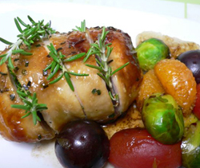

クリスマスのローストチキン
- 調理時間：40 分
- （一人当たり）
- カロリー：300kcal
- たんぱく質：18.0g
- 脂質：16.2g
- 塩分：2.3g


＜４人分＞
- 鶏もも肉
- ２枚
- 塩
- 少々
- コショウ
- 少々
- みりん
- 大さじ３
- 醤油
- 大さじ３
- ローズマリー
- 少々
- パセリ
- 少々
- 植物油
- 小さじ１
- オレンジ
- １／４個
- ブドウ
- ８粒
- 芽キャベツ
- ４～５個
- プチトマト
- ４～５個
- バルサミコ酢
- １００ｍｌ


- 鶏肉は塩、コショウをして、みりんと醤油で下味をつけた後、みじん切りパセリとローズマリーをまぶして190度のオーブンで焼く。
- オレンジは薄皮をむいて一口大に切る。プチトマトと芽キャベツは半分に切る。
- フライパンを熱して油をしき、オレンジ、プチトマト、芽キャベツ、ブドウを炒めて一旦とり出す。
- フライパンを軽くふいてから、バルサミコ酢を入れて煮詰め、③を戻して全体にからめる。
- ①が焼けたら食べやすい大きさに切り分け、お皿に盛りつけ、④を添える。
クリスマスのローストチキン
そもそも、ヨーロッパでは感謝祭やクリスマスに七面鳥を食べるのですが、日本では入手可能なニワトリが一般的となり、ローストチキンを作ることが多くなったと考えられています。
鶏肉には、粘膜や視力を正常に保ち、病気の予防や回復に役立つビタミンＡが含まれますので、冬の風邪予防やインフルエンザ対策にもってこいの食材です。添えのソテーは野菜が定番ですが、ブドウやオレンジなどのフルーツを合わせれば、パーティー向けの華やかな一皿になります。ビタミンＣも一緒にとれるのでコラーゲンと合わさって、免疫力向上＆美肌のダブル効果も期待できます。